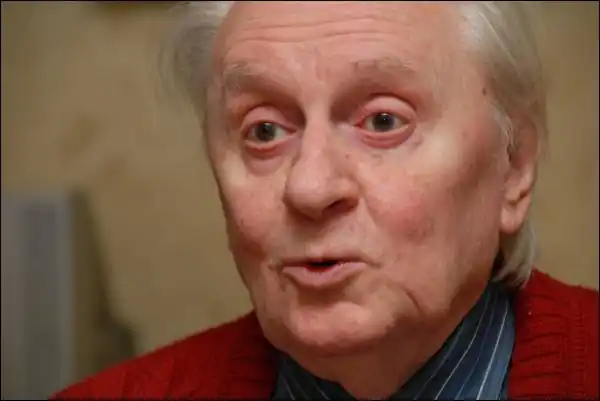
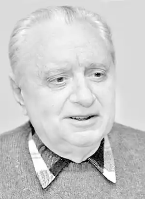

Всеволод Нестайко
Нестайко Всеволод Зіновійович — український письменник.
Народився 30 січня 1930 року в м. Бердичів, тепер Житомирської області. Закінчив 1952 року Київський університет. Працював у редакціях журналів "Дніпро", "Барвінок", видавництвах "Молодь", "Веселка". Пише повісті, оповідання, казки для дітей. Автор збірок оповідань "Шурка і Шурко" (1956), "Це було в Києві" (1957), повістей "В Країні Сонячних Зайчиків" (1959), "Пригоди Робінзона Кукурузо" (1964), "Таємниця трьох невідомих" (1970), "Тореадори з Васюківки" (1973; однойменний телефільм 1968р. за цим твором одержав "Гран-прі" на Міжнародному кінофестивалі в Мюнхені і 1969р. — головну премію на Міжнародному кінофестивалі в Алегзандрії, Австралія), "Одиниця з обманом" (1976, однойменний фільм за цим твором одержав 1984р. премію на Всесоюзному кінофестивалі в Києві та 1985р. — на Міжнародному кінофестивалі в Габрово), "Пригоди Грицька Половинки" (1978), "Пригоди журавлика" (1979), "Незвичайні пригоди у лісовій школі" (1981; премія ім. Лесі Українки, 1982), "Чудеса в Гарбузянах" (1984), "П'ятірка з хвостиком" (1985), "Скринька з секретом" (1987), збірки казок "Незнайомка з Країни Сонячних Зайчиків" (1988), збірки детективів "Таємничий голос за спиною" (1990), п'єс "Марсіанський жених" (1968), "Робінзон Кукурузо" (1970), "Вітька Магеллан" (1975), "Пересадка серця" (1983), збірки п'єс "Слідство триває" (1989) та ін. Тематика творів В. Нестайка (більшість з них — пригодницько-гумористичні) — життя школярів, формування духовного світу дітей. Книжку "Тореадори з Васюківки" 1979 року рішенням Міжнародної Ради з дитячої та юнацької літератури занесено до "Особливого Почесного списку Г. К. Андерсена". Твори В. Нестайка перекладено багатьма мовами.